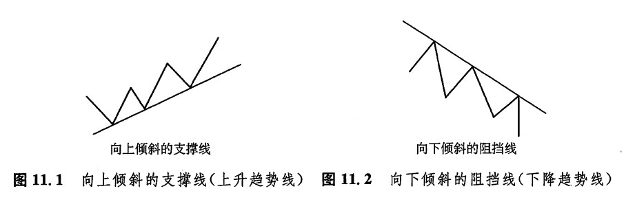
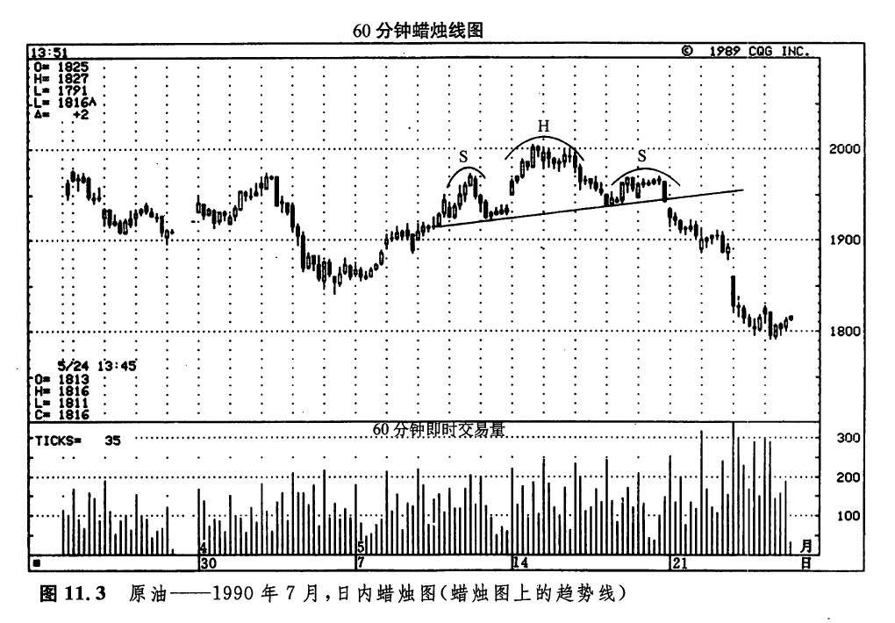
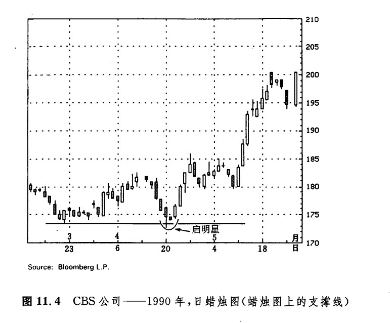
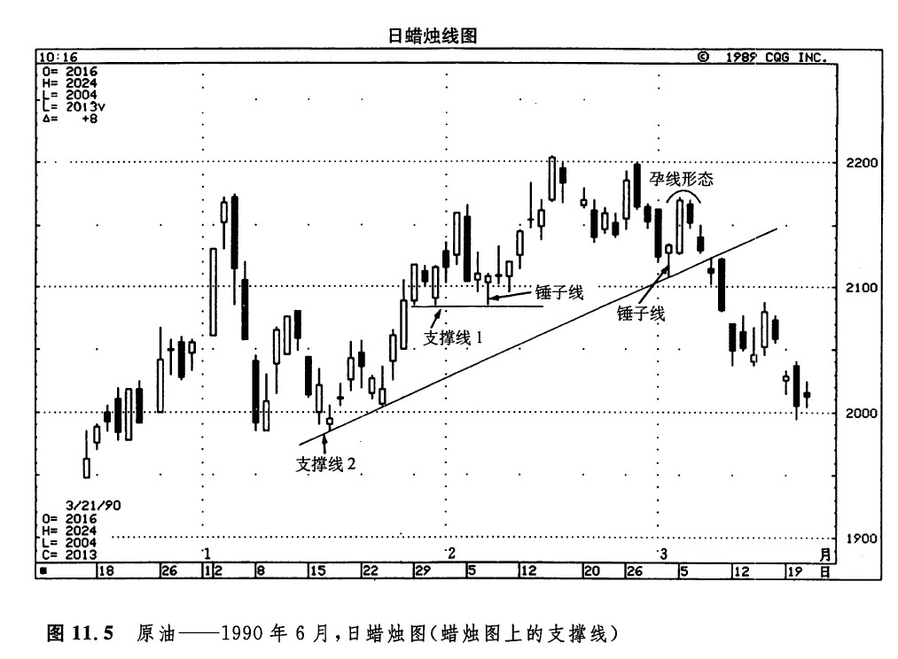
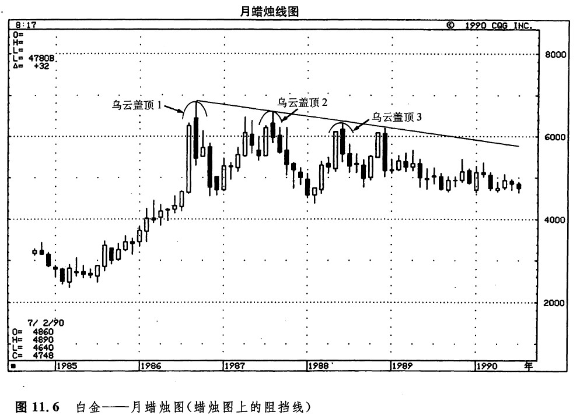
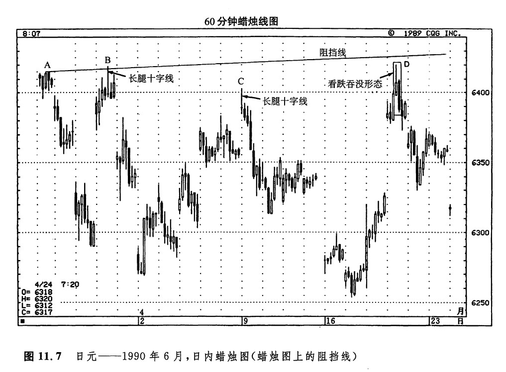
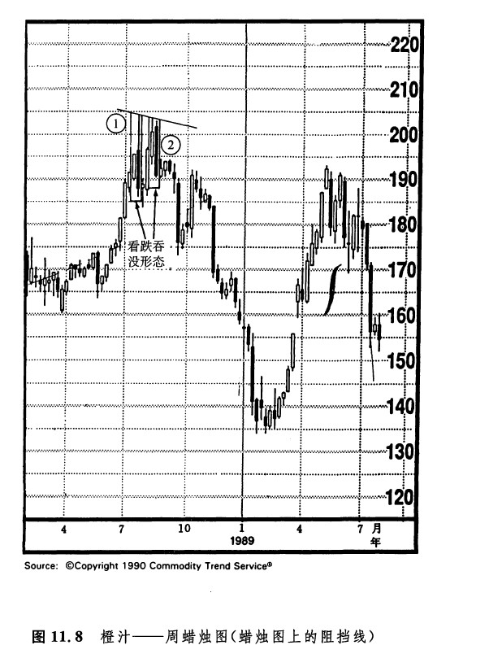
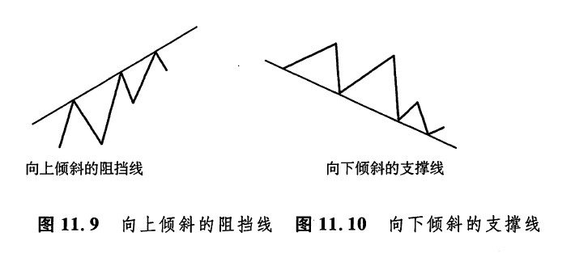
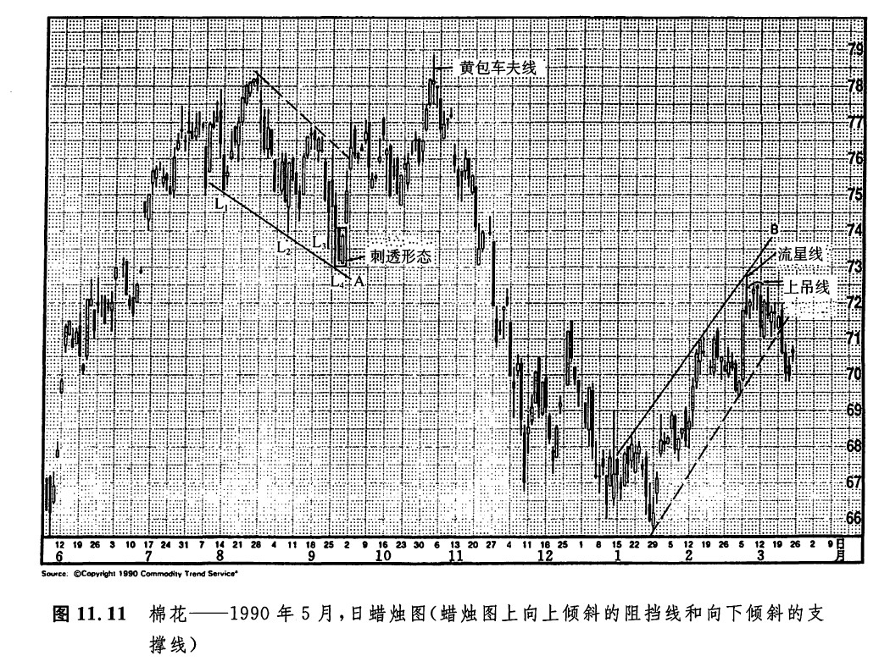

图11.1所示为一条向上倾斜的支撑线。至少需要两个向上反弹的低点才能连接出这样一条直线。这根支撑线表明，在这段时间中，买方比卖方更为主动、积极，因为在逐渐提升的新低点处，还能够引致新的需求。这根线标志着市场正处于上升趋势中。图11.2所示为一根向下倾斜的阻挡线。至少需要两个向下反弹的高点才能连结出这样一条直线。这条阻挡线表明，在这段时间中，卖方比买方更为大胆、积极，因为在逐渐降低的新高点处，依然吸引了卖方的卖出意愿。这根直线反映出市场正处于下降趋势中。

支撑线或阻挡线的潜力的强弱，取决于以下几个方面：诙直线曾经成功地经受市场试探的次数：每次试探时交易量的多寡；该直线维持有效的时间长短。在图11.3中，并没有值得特别关注的蜡烛图指标。虽然如此，本实例还是能够揭示出蜡烛图的一个重要优势。无论您在普通线图上进行的是什么样的分析，在蜡烛图上都可以如法炮制。从这一实例我们看到，在这张蜡烛图上，图示头肩形的基本颈线的作法，与在线图上的作法同样便利。无论如何，我们从本章往下的内容还将看到，蜡烛图为趋势线分析进一步拓展了深度。

如图11.4所示，3月下旬的低点（在173美元附近）形成了一个支撑区。4月下旬，市场对之进行了一轮成功的试探。正是借助于蜡烛图技术，我们才从4月的这次成功的试探中，拥有了一份额外的硅码，以形成看涨的预期。具体而言，从4月20日到22日，形成了一个启明星形态。

如图11.5所示，通过对趋势线和蜡烛图指标的综合应用，我们获得了丰富的市场信息。这些信息的内容大体有如下几个方面：
1.在图示支撑线1（从1月底到2月初）的形成过程中，最初的2个决定点分别为1月29日的最低点和31日的最低点。2月7日是市场对该线的第三次尝试，并且这一天还是一根看涨锤子线。上述两个方面的要素综合起来，就构成了一个底部反转信号。对于在该区域买进的市场参与者来说，这根锤子线的低点可以用作设置保护性止损指令的参照水平。

2.图示支撑线2（从1月中到3月初）的意义比趋势线1更重要，因为这根线维持有效的时间比后者长得多。3月2日，市场对该直线进行了第3次试探，并且形成了一根看涨锤子线。考虑到当时的主要趋势是上升的（正如向上倾斜的支撑线2所示），还有这根看涨锤子线，以及市场对该支撑线的成功的试探，这些因素相互验证，汇聚为3月2日的买入信号。在这种情况下，保护性止损指令的水平可以安排在这根锤子线的低点之下，或者设置在这根上升趋势线的下面。如果市场向下穿越了这根支撑线，则构成了警告信号，说明先前的上升趋势可能已经陷入困境。随后的孕线形态显露了最初一点端倪：当前趋势遇上麻烦了。
本实例说明了采取止损措施的重要性。正如上述所讨论的，当市场以锤子线的形式试探支撑线2时，有不少理由可以推断市场还将进一步上涨。然而，市场却向下回落了。当我们入市交易时，一方面应当树立信心，但是另一方面，也应当始终留有几分余地，考虑到一定的不确定性。在市场操作中，尤其是在期货交易中，其中一个最重要的概念就是风险控制。采用保护性止损指令实际上是风险控制的同义词。
如图11.6所示，乌云盖顶形态1和2构成了一条阻挡线。乌云盖顶形态3恰好碰上了这条阻挡线，从而验证了这条线的技术意义：在这根线上，市场有充足的供给。在图11.7中，A点之前曾有过一段上涨行情（本图未显示），这段行情就结束于A点。这里大约为0.6419美元，为市场准备了一个初步的阻挡区。在点B处，出现了一根长腿十字线。此外，还有一点理由也值得我们多加小心，这根十字线刚好出现在A点所形成的阻挡水平的附近。通过点A和点B两个初始点，就确定了图示的阻挡线。本图是一张小时蜡烛线图，如果您使用了这样的日内图表，自然就会注意，在该线附近，市场的上冲行情可能将失败，因而采取相应的对策——尤其是在您同时还看到了验证性的看跌蜡烛图指标的情况下。在点C，也有一根长腿十字线（与B点处的相像），而且这里也接近这条阻挡线。结果，市场掉头回落。在点D处，是一根具备长长的上影线的白色蜡烛线，这是一个流星形态。市场在这根阻挡线处再次遭遇败绩。在这根白色蜡烛线之后，紧随着一根黑色蜡烛线，并且后者覆盖了前者。这两根蜡烛线组成了一个看跌吞没形态。


采取保护性止损措施的重要性
我们应当利用技术分析来确定风险/报偿的比例值。只有这样，才能为分析者提供一种行之有效的控制机制，由此形成以风险与盈利管理为基础的交易方式。所谓风险的确定，意味着通过设置保护性止损指令，帮助我们防范意料之外的不利价格变化。如果某位技术分析者没有采取止损措施，那么，他就白白地舍弃了技术分析最强有力的一部分长处。
我们应当在最初建立交易头寸的时候，就设置好止损水平；只有在这个时候，我们才是最冷静、客观的。只有在市场的演变符合我们本来的预期的条件下，才能继续持有当初的交易头寸。如果后来的价格变化与我们的预期相反，或者哪怕只是未能证实我们的预期，就应当当机立断，平仓出市，如果市场的运动与您的头寸方向相反，您也许会认为，“何必多此一举，实施止损措施呢——这不过是一段短暂的反方向变化。”这么一来，你就顽固地守着这个头寸不放，一心指望市场终将回到您的方向上来。请不要忘记下列两项事实：
1.所有的长期趋势都是由短期趋势开头的。
2.市场上绝无一厢情愿的余地。市场自行其是，既不在意您的想法，也不关心您的头寸。
市场并不在乎您是不是顺从了它的趋势。有一件事比犯错误还要命，那便是坚持错误，宁可放弃您的高见，不要丧失您的金钱.有能力及早地纠正自己的错误，其实是一件值得自豪的事.被市场落实了止损指令，就，意味着认错服输。人们对承认错误深恶痛绝，因为这里面往往牵扯上了个人的自尊心和名声等。优秀的交易商从不过于固执己见.据说，著名的私人投资家沃伦·巴菲特信奉两项原则：
1.保全资本金；
2.绝不可忘记原则1。
采取止损措施与原则1实质上是相同的。我们的资源是有限的。因此，这些资源应尽最大可能地增长，至少，也应当妥善地加以维护。如果您在某个市场上遇到了市场方向与自己的头寸相反的情况，那么这正是止损出市的时候，也正是另寻好机会的时候。想一想，何不将止损带来的损失看成您投资事业的成本呐。
既然如此之多的日本蜡烛图术语都发端于军事行话，我们不妨从这方面的意义上来看待止损这件事。每一笔交易，都是一场战斗。在战场上，即使是最伟大的将军，也不得不做出暂时的战术撤退；在市场上，我们同样不得不暂时地退却。战场上，统帅撤退的目的是要保存兵员和军火。我们的目的是挽救资金，保持心态的平衡。有时，你必须先输掉几仗，才能赢得最后的胜利。拿日本人的话来说，“只要钓得上鲑鱼，丢个把鱼钩是值得的。”如果您被止损出市，那就当失去一把鱼钩吧。没准，下一钩您就能钓上一条大家伙。
图11.8显示了两个吞没形态，其中吞没形态1对多头来说是个警告信号。几周过后，又出现了其中第二个看跌的吞没形态。另一方面，吞没形态2的高点也是市场在图示阻挡线处的一次失败。图11.9所示为一根向上倾斜的阻挡线。这是一种连接逐渐上升的高点而成的趋势线。虽然这种趋势线不如在图11.1中所示的向上倾斜的支撑线流行，但是对于多头者来说，这也是一种很有价值的研究手段。当市场向上逼近这类直线的时候，多头者应当采取防范性措施，以防市场在此处向下回落。在这些防范性措施中，包括平回一部分多头头寸，实现部分利润，或者提高止损指令的水平，还可以卖出买权期权。尽管上述回落过程应该是暂时现象（因为主要趋势的方向是向上的），但是，如果市场在此处遭到了失败，则可能构成了一个初步的、带有试验性质的指标，暗示市场可能从此开始新的下降趋势。


图11.10所示为一根向下倾斜的支撑线。这类直线人们也不经常使用，但是在某些场合下，对卖出做空者而言是极有用途的。具体来讲，这类向下倾斜的支撑线是下降趋势的一个标志（它的向下倾斜的坡度说明了这一点）。不过，如果市场能够成功地维持于这类支撑线之上，那么空头者就应当采取防范性的措施，以防备价格向上反弹。
在观察图11.11的时候，我们的注意力首先放在图示的向下倾斜的支撑线上（直线A），这条线与图11.10所示的基本一致。连接低点L1和L2，就得到了这条试验性的支撑线。在L3所示的那蜡烛线上，起初市场已经差不多触及了这条直线，而后又从此向上反弹。这就证明这条支撑线是有效的。L4所示的低点，不仅标志着市场对这条向下倾斜的支撑线的试探成功，而且形成了一个看涨剌透形态。这个时刻正是平回空头的大好时机——或者，至少也应当采取一定的保护性措施，比如降低止损指令的水平，或者卖出卖权期权。不过，此时还不是买进做多的良机，因为主要趋势依然是向下的（这一点就反映在当前两条疲软的管道线上，一条是向下倾斜的支撑线A，另一条是位于直线A上方的阻挡线，以虚线表示）。在本实例中，后来的结局表明，L所示的低点正是一轮强劲的牛市行情的起点。这段上涨行情持续了几个月，直到出现了一个长腿十字线（这是一根黄包车夫线，因为它的开市价和收市价居于当日价格区间的中点），以及一根上吊线才结束。请注意，10月19日和20日还组成了另一个剌透形态。
往下，我们还是研究图11.11所示的实例，再看一看图示的向上倾斜的阻挡线（直线B）。这根直线的轮廓与图11.9所示的基本一致。从1月15日开始，市场形成了一系列逐渐抬升的高点。根据这根直线（以及图上用虚线表示的那条支撑线），我们可以看出，市场当时正处于上升趋势中。3月6日，当市场在这条向上倾斜的阻挡线上遭到失败时，就对多头者发出了一个警告信号，要求他们采取防范性措施。请注意，市场在对该阻挡线的第三次试探过程中，还构成了一条流星线。它具有很长的上影线和小小的实体。在这条流星线之后，三根蜡烛线都是上吊线，或者是上吊线的变体。把上述各方面因素综合起来（市场从阻挡线上向下回落、流星线、相继出现的几根上吊线），就得到了一个明确的警告信号：市场将很快进入调整状态。

下一篇：破低反涨形态与破高反跌形态
上一篇：第十一章 蜡烛图与趋势线